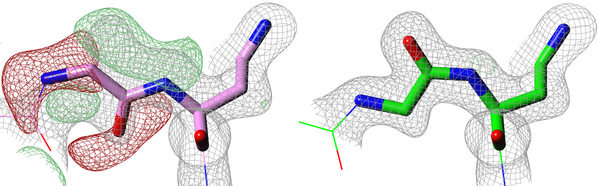
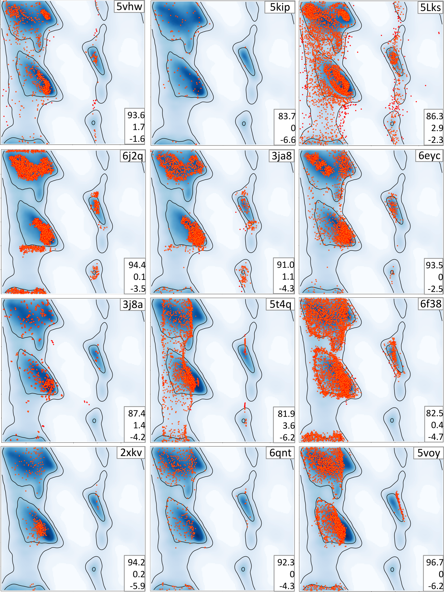
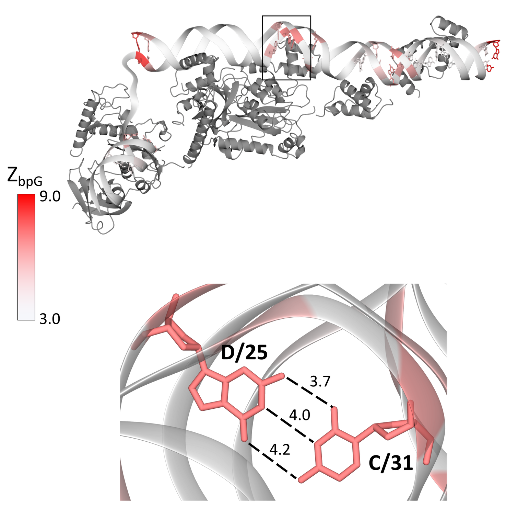
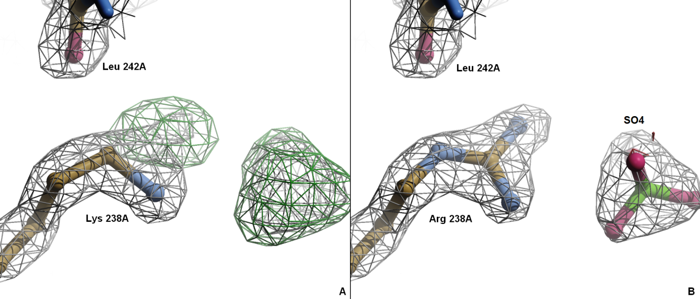

Structural Data: Formats, Databases, and Quality
In October 1971, Walter Hamilton and his colleagues at Brookhaven National Laboratory established the Protein Data Bank with seven structures.1 Hamilton and his colleagues reasoned that if crystallographers deposited their atomic coordinates in a central archive, others could reuse them without repeating years of diffraction experiments. Hamilton died just two years later, but the archive he founded grew at a pace no one anticipated. By 1980 it held 75 structures. By 2000, roughly 13,000. As of early 2024, the Protein Data Bank contains over 210,000 experimentally determined macromolecular structures, and the AlphaFold Protein Structure Database adds another 200 million predicted models on top of that.
1 The original seven included myoglobin, hemoglobin, cytochrome b5, alpha-chymotrypsin, lysozyme, carboxypeptidase A, and subtilisin BPN’.
2 Kleywegt (2000) documented systematic errors in older PDB entries and their downstream effects on homology modeling, ligand docking, and force-field parameterization.
But quantity brought quality challenges that the founders could not have foreseen. Early depositions often lacked the experimental data behind the coordinates. Some structures were refined against insufficient data with too many free parameters. Others contained errors in amino acid identity, stereochemistry, or chain tracing that went undetected for years and then propagated silently through hundreds of computational studies that treated PDB coordinates as ground truth. A 2004 study found that roughly 20% of side-chain placements in structures solved before 1990 were incorrect by modern validation standards.2 The situation improved with mandatory validation, but the lesson remains relevant: every coordinate file carries assumptions, limitations, and potential errors that a downstream user must understand.
This chapter covers the practical foundations of working with structural data. We begin with the file formats used to encode atomic coordinates, move to the databases that store and distribute them, and then spend the bulk of the chapter on the validation metrics that distinguish a reliable structure from a questionable one. We close with PDB-REDO, an automated re-refinement pipeline that has improved thousands of older depositions using modern protocols.
Coordinate formats
A macromolecular structure is, at bottom, a list of atoms with three-dimensional coordinates. The file formats that encode this list have shaped how the field thinks about structural data, and their quirks have introduced persistent headaches.
The PDB format
The original PDB format dates to the era of punch cards. Each line is exactly 80 characters wide, and each column has a fixed meaning. An ATOM record, which describes a single atom in a standard residue, packs the atom name, residue name, chain identifier, residue sequence number, Cartesian coordinates \((x, y, z)\) in Ångströms, occupancy, and temperature factor (B-factor) into those 80 columns:3
3 The HETATM record uses the same column layout but denotes atoms in non-standard residues such as ligands, metal ions, and modified amino acids.
ATOM 1 N ALA A 1 27.360 24.447 2.614 1.00 23.05
ATOM 2 CA ALA A 1 26.426 25.514 2.229 1.00 19.82
ATOM 3 C ALA A 1 26.996 26.920 2.307 1.00 17.56Columns 31–54 hold the \(x\), \(y\), and \(z\) coordinates, each in a field 8.3 characters wide, giving a precision of 0.001 Å. Columns 55–60 store the occupancy (a number between 0 and 1), and columns 61–66 hold the B-factor in Å\(^2\).
The format served the community for decades, but it was designed for small, single-chain proteins. The chain identifier field is a single character, limiting the format to 62 chains (A–Z, a–z, 0–9) in a single file. The residue sequence number field is five digits wide, capping it at 99,999. The atom serial number field allows at most 99,999 atoms. These limits became untenable as structural biology moved toward large macromolecular machines.4
4 The ribosome structure 4V9D, for instance, contains over 400,000 atoms across more than 80 chains. It cannot be represented in a single PDB-format file without workarounds.
The mmCIF format
The macromolecular Crystallographic Information File (mmCIF) replaced the PDB format as the master format of the Protein Data Bank in 2014.5 Where the PDB format relies on column positions, mmCIF uses a dictionary-based approach: each data item has a name drawn from a controlled vocabulary, and values are associated with those names explicitly. A fragment of mmCIF for the same atoms looks like this:
5 The PDB announced in 2014 that mmCIF would become the standard archive format. PDB-format files are still distributed for backward compatibility but are no longer generated for structures that exceed PDB-format limits.
loop_
_atom_site.group_PDB
_atom_site.id
_atom_site.type_symbol
_atom_site.label_atom_id
_atom_site.label_comp_id
_atom_site.label_asym_id
_atom_site.label_seq_id
_atom_site.Cartn_x
_atom_site.Cartn_y
_atom_site.Cartn_z
_atom_site.occupancy
_atom_site.B_iso_or_equiv
ATOM 1 N N ALA A 1 27.360 24.447 2.614 1.00 23.05
ATOM 2 C CA ALA A 1 26.426 25.514 2.229 1.00 19.82
ATOM 3 C C ALA A 1 26.996 26.920 2.307 1.00 17.56The format is more verbose, but it escapes all the column-width limitations of the PDB format. Chain identifiers can be arbitrary strings, atom counts are unbounded, and the dictionary enforces a controlled vocabulary that makes automated parsing far less error-prone. Equally important, mmCIF can encode metadata that the PDB format simply cannot represent: details of multi-step refinement protocols, experimental conditions, and links between asymmetric-unit contents and biological assemblies.
B-factors and occupancy
Two quantities in every coordinate file deserve special attention because they are frequently misunderstood.
The B-factor (also called the temperature factor, displacement parameter, or Debye–Waller factor) quantifies how much an atom’s position varies around its mean location. Under the assumption of isotropic, harmonic displacement, the B-factor relates to the mean-square displacement \(\langle u^2 \rangle\) by \[\label{eq:bfactor-isotropic} B = 8\pi^2 \langle u^2 \rangle.\] A B-factor of 20 Å\(^2\) corresponds to a root-mean-square displacement of about 0.50 Å, while a B-factor of 80 Å\(^2\) corresponds to roughly 1.01 Å.6 The physical picture is that atoms in well-ordered regions of a crystal (buried hydrophobic cores, for instance) have low B-factors (often 10–20 Å\(^2\)), while surface loops and terminal residues can reach 60–100 Å\(^2\) or higher.
6 Using [eq:bfactor-isotropic]: \(\sqrt{\langle u^2 \rangle} = \sqrt{B / (8\pi^2)}\). For \(B = 20\), this gives \(\sqrt{20/78.96} \approx 0.50\) Å.
But B-factors are not purely physical. In crystallographic refinement, the B-factor absorbs anything that smears electron density: genuine thermal motion, static disorder across unit cells, partial occupancy of a site, errors in the model, and even deficiencies in the data (radiation damage, absorption effects, ice rings). A high B-factor is a warning sign, not a diagnosis. It says “this atom’s position is uncertain,” without specifying why.
Occupancy records the fraction of unit cells in which an atom actually occupies the modeled position. For most atoms in a well-ordered crystal, the occupancy is 1.0. But if a side chain adopts two distinct conformations (rotamer A in 60% of unit cells and rotamer B in 40%), the crystallographer models both conformations and assigns occupancies of 0.60 and 0.40 respectively. These are recorded as “alternate conformations” (altlocs A and B in PDB nomenclature).
Many software tools ignore alternate conformations by default, reading only the first conformer or the one with the higher occupancy. This is often acceptable for backbone analysis, but it can cause serious errors in binding-site studies: a ligand interaction that depends on a minor rotamer will be invisible if only the major conformer is read. Careful users always check the occupancy column before trusting coordinate-derived measurements.
Databases
The Protein Data Bank is operated by the Worldwide Protein Data Bank consortium (wwPDB), whose four member organizations each run a regional portal: RCSB PDB in the United States, PDBe in Europe, PDBj in Japan, and BMRB for NMR data.7 Deposition is mandatory for structures reported in peer-reviewed publications, and since 2008, experimental structure-factor amplitudes (or NMR restraints, or cryo-EM maps) must be deposited alongside the coordinates. This policy was the single largest driver of improved validation in the archive: without experimental data, independent revalidation is impossible.
7 The wwPDB was formalized in 2003 to ensure a single, consistent archive regardless of where a structure is deposited. All four sites serve the same underlying data, but their search interfaces, analysis tools, and API designs differ.
Each PDB entry is assigned a four-character accession code (e.g., 1CRN for crambin, 6LU7 for the SARS-CoV-2 main protease). The entry contains the atomic coordinates, metadata about the experiment (resolution, space group, refinement software, data-collection wavelength), and links to the deposited experimental data. Starting in 2024, the PDB began transitioning to extended accession codes to accommodate the growing archive.
The Electron Microscopy Data Bank (EMDB) stores three-dimensional reconstructions from cryo-electron microscopy. Unlike X-ray crystallography, where the deposited experimental observables are structure-factor amplitudes, cryo-EM deposits consist of density maps, three-dimensional grids of electrostatic potential values. When an atomic model is built into a cryo-EM map, the model goes to the PDB and the map goes to the EMDB, cross-referenced by accession codes. The rapid growth of cryo-EM since the “resolution revolution” of 2013–20148 has made EMDB one of the fastest-growing structural archives. As of 2024 it holds over 40,000 map entries.
8 The development of direct electron detectors and improved image-processing algorithms, recognized by the 2017 Nobel Prize in Chemistry to Dubochet, Frank, and Henderson, pushed single-particle cryo-EM to near-atomic resolution for the first time.
The AlphaFold Protein Structure Database, launched in 2021 by DeepMind and the European Bioinformatics Institute, represents a different category of structural data entirely. Its entries are not experimentally determined; they are predictions from the AlphaFold2 neural network, trained on the PDB and co-evolutionary sequence data. The database contains predicted structures for over 200 million proteins, covering nearly every known protein sequence in UniProt.
This scale is staggering, but predicted structures carry their own set of quality considerations. AlphaFold provides a per-residue confidence metric called the predicted local distance difference test (pLDDT), ranging from 0 to 100. Residues with pLDDT above 90 are generally well-predicted; between 70 and 90, the backbone is usually reliable but side-chain positions should be treated with caution; below 50, the prediction is essentially unreliable and often corresponds to disordered regions that lack a single defined structure in the first place.9
9 The AlphaFold team explicitly warns against interpreting low-pLDDT regions as structural. These regions frequently correspond to intrinsically disordered segments, linkers, and signal peptides that are flexible in solution.
The coexistence of experimental and predicted structural databases creates a new challenge for the field. A researcher querying for a protein’s structure may find an AlphaFold prediction, a 2.5 Å crystal structure, and a 3.8 Å cryo-EM map. Knowing how to evaluate the reliability of each, and when to prefer one over another, requires the validation framework we develop in the next two sections.
Validation of crystallographic structures
Every crystallographic model is the result of an optimization procedure: the refinement program adjusts atomic positions, B-factors, and sometimes occupancies to minimize the disagreement between the diffraction pattern calculated from the model and the diffraction pattern actually measured. Validation asks whether the result of that optimization is physically reasonable and supported by the experimental data, or whether the refinement program has been given too much freedom and has produced a model that fits the data by overfitting noise.
Resolution
Before discussing agreement metrics, recall what resolution means. In X-ray crystallography, resolution is the smallest interplanar spacing \(d_{\min}\) for which diffraction data were collected. Higher-resolution data (smaller \(d_{\min}\)) contain more information about atomic positions. At 3.0 Å resolution, the overall fold and secondary-structure elements are visible but individual atoms are not resolved. At 2.0 Å, most side chains can be placed confidently. At 1.0 Å or better, individual atoms are resolved and hydrogen atoms begin to appear in the electron-density maps.10
10 Roughly speaking, the number of independent observations in a diffraction data set scales as \(d_{\min}^{-3}\), so halving the resolution increases the data-to-parameter ratio eightfold.
Resolution is not a measure of model quality. It is a property of the crystal and the diffraction experiment. A 2.0 Å structure can be poorly refined, and a 3.0 Å structure can be carefully and correctly built. But resolution sets a ceiling on the level of detail that the data can support.
The R-factor
The oldest and most widely reported measure of model-data agreement is the crystallographic R-factor: \[\label{eq:rfactor-refinement} R = \frac{\displaystyle\sum_{hkl} \bigl|\, |F_{\mathrm{obs}}(hkl)| - |F_{\mathrm{calc}}(hkl)|\, \bigr|} {\displaystyle\sum_{hkl} |F_{\mathrm{obs}}(hkl)|},\] where \(F_{\mathrm{obs}}\) and \(F_{\mathrm{calc}}\) are the observed and calculated structure-factor amplitudes and the sums run over all measured reflections \((hkl)\).11
11 Structure factors are the Fourier components of the electron density. Each reflection \((hkl)\) corresponds to a specific spatial frequency, and its amplitude \(|F(hkl)|\) and phase \(\phi(hkl)\) together determine the contribution of that frequency to the map. Phases are lost in the diffraction experiment (the famous “phase problem”) and must be recovered by experimental or computational methods.
An R-factor of 0.0 would mean perfect agreement between model and data. A random arrangement of atoms gives an R-factor around 0.59. For a well-refined protein structure at moderate resolution, R-factors typically fall between 0.15 and 0.25.
The problem with \(R\) as a sole quality indicator is that it always decreases when you add more parameters to the model. Every additional atom, every refined B-factor, every alternate conformation reduces \(R\), whether or not the added complexity is justified by the data. A sufficiently parameterized model will fit noise as well as signal, driving \(R\) toward zero while producing a physically nonsensical structure.
R-free and overfitting
Axel Brünger introduced \(R_{\mathrm{free}}\) in 1992 to address exactly this problem.12 The idea borrows from cross-validation in statistics. Before refinement begins, the crystallographer sets aside a randomly chosen subset of reflections, typically 5% of the total, as a “test set.” These reflections are never used during refinement. \(R_{\mathrm{free}}\) is computed using [eq:rfactor-refinement] but summed only over the test-set reflections: \[\label{eq:rfree} R_{\mathrm{free}} = \frac{\displaystyle\sum_{hkl \in \mathcal{T}} \bigl|\, |F_{\mathrm{obs}}(hkl)| - |F_{\mathrm{calc}}(hkl)|\, \bigr|} {\displaystyle\sum_{hkl \in \mathcal{T}} |F_{\mathrm{obs}}(hkl)|},\] where \(\mathcal{T}\) is the test set. The complementary quantity, \(R_{\mathrm{work}}\), uses the remaining reflections (the “working set”).
12 Brünger (1992), “Free R value: a novel statistical quantity for assessing the accuracy of crystal structures.” Nature, 355, 472–475. The paper has been cited over 15,000 times and changed standard practice in the field within a few years of its publication.
If a refinement step genuinely improves the model, both \(R_{\mathrm{work}}\) and \(R_{\mathrm{free}}\) decrease. If the step overfits noise, \(R_{\mathrm{work}}\) decreases but \(R_{\mathrm{free}}\) stays flat or increases. The gap between \(R_{\mathrm{work}}\) and \(R_{\mathrm{free}}\) is therefore a direct measure of overfitting. For a well-refined structure, this gap is typically 2–5 percentage points. A gap exceeding 7–8 points signals a problem.
The introduction of \(R_{\mathrm{free}}\) had immediate practical consequences. Several highly cited structures that had been refined to suspiciously low R-factors were shown to have \(R_{\mathrm{free}}\) values no better than random models, revealing that the low \(R\) had been achieved by fitting noise rather than capturing real structural features. Deposition of \(R_{\mathrm{free}}\) test-set flags became standard practice, and journals began requiring both \(R_{\mathrm{work}}\) and \(R_{\mathrm{free}}\) in structure reports.
Geometric validation
Agreement with the diffraction data is necessary but not sufficient. A model could fit the data well while containing bond lengths, bond angles, or torsion angles that are physically impossible. Geometric validation checks whether the model’s internal geometry is consistent with what we know from high-resolution small-molecule crystallography and quantum-chemical calculations.

The most famous geometric check is the Ramachandran plot, introduced by G. N. Ramachandran and colleagues in 1963.13 Each non-glycine, non-proline residue in a protein has two backbone dihedral angles: \(\phi\) (the torsion around the N–C\(^\alpha\) bond) and \(\psi\) (the torsion around the C\(^\alpha\)–C bond). Steric clashes between backbone atoms restrict the (\(\phi\), \(\psi\)) combinations that are physically accessible. Ramachandran and his coworkers computed these allowed regions from hard-sphere contact distances and found that most of the (\(\phi\), \(\psi\)) plane is sterically forbidden.
13 Ramachandran, Ramakrishnan, and Sasisekharan (1963), “Stereochemistry of polypeptide chain configurations.” J. Mol. Biol., 7, 95–99. The plot predates most of the structures it is now used to validate.

When the plot is drawn using the observed \(\phi\) and \(\psi\) values from a refined structure, the percentage of residues that fall outside the allowed regions (the Ramachandran outlier percentage) is a direct measure of model quality. A well-refined structure at reasonable resolution should have fewer than 0.5% outliers. An outlier percentage above 2% in a modern refinement is cause for concern: either the structure contains genuine strain (rare, and should be discussed in the publication) or the model is wrong at those positions.14
14 Glycine, with no side chain, has a much broader allowed region. Proline, constrained by its pyrrolidine ring, is restricted to a narrow region near \(\phi \approx -63°\). Both are excluded from the standard outlier count and evaluated separately.
MolProbity

MolProbity, developed by the Richardson laboratory at Duke University, combines several geometric checks into a single validation suite. Its key metrics include:
The clashscore, defined as the number of serious steric overlaps per 1,000 atoms, where a serious overlap is defined as two non-bonded atoms whose van der Waals shells interpenetrate by more than 0.4 Å. After adding hydrogen atoms to the model (since most crystal structures do not include them), MolProbity computes all pairwise atomic distances and flags those that are too short. A clashscore below 10 is considered good; below 5 is excellent. Older structures refined without modern steric restraints sometimes have clashscores above 40.
Rotamer outliers are side chains whose \(\chi\) torsion angles do not match any of the known preferred conformations (rotamers) observed in high-quality structures. The rotamer libraries used by MolProbity are derived from structures at 1.0 Å resolution or better, where the electron density is clear enough to determine side-chain conformations unambiguously. A well-refined structure should have fewer than 1% rotamer outliers.
C\(\beta\) deviations flag residues where the position of the C\(\beta\) atom deviates from its ideal position (calculated from the backbone geometry) by more than 0.25 Å. A large C\(\beta\) deviation usually indicates an error in backbone or side-chain placement, or occasionally a genuine backbone distortion.
MolProbity rolls these metrics into a single numerical score calibrated against PDB-wide percentiles, making it easy to see at a glance whether a structure’s geometry is better or worse than average for its resolution range. Journals now routinely require a MolProbity validation report as part of the structure deposition process.
Real-space correlation
Global metrics like \(R_{\mathrm{free}}\) tell you about the model as a whole, but they cannot identify which parts of the model are well-determined and which are not. A structure with \(R_{\mathrm{free}}\) of 0.22 might have 90% of its residues modeled correctly and 10% that are essentially guesses fitted into weak or ambiguous density. For many applications (drug design, mutation analysis, molecular dynamics), it is the local reliability that matters.
The real-space correlation coefficient (RSCC) addresses this need. For each residue (or ligand, or other model fragment), RSCC measures the correlation between two electron-density values: the density calculated from the full model and the density observed from the experimental data.15 It ranges from \(-1\) to \(+1\), with values above 0.9 indicating excellent agreement and values below 0.7 indicating poor agreement. An RSCC below 0.7 for a residue in a 2.0 Å structure is a strong signal that the modeled conformation does not match what the crystal actually contains.
15 More precisely, RSCC is computed over the grid points in the vicinity of the residue, comparing the \(2F_{\mathrm{obs}} - F_{\mathrm{calc}}\) map (which shows the experimentally supported density) with the \(F_{\mathrm{calc}}\) map (which shows what the model predicts).
The wwPDB validation pipeline computes RSCC for every residue in every deposited structure and includes the results in the validation report. Users who plan to rely on a specific region of a structure (a binding site, an active-site residue, a loop near a mutation site) should check the RSCC values for those residues before drawing conclusions.
PDB-REDO: automated re-refinement
If validation metrics can identify problems, the natural next question is whether those problems can be fixed automatically. The PDB-REDO project, developed by Robbie Joosten, Gert Vriend, and colleagues at the Netherlands Cancer Institute and Radboud University, answers this question with a qualified yes.16
16 Joosten et al. (2012), “PDB_REDO: automated re-refinement of X-ray structure models in the PDB.” J. Appl. Crystallogr., 45, 231–235.
PDB-REDO takes an existing PDB entry (the deposited coordinates and the deposited structure-factor data) and puts them through a modern, fully automated refinement pipeline.

The pipeline uses the latest version of REFMAC5 for maximum-likelihood refinement, applies current geometric restraint libraries, rebuilds side chains where the electron density supports different rotamers, adds or removes alternate conformations, optimizes B-factor model complexity (deciding whether each atom needs an isotropic B-factor, a TLS group contribution, or both), and flips peptides and side chains where the density is ambiguous.17
17 Peptide flips (180° rotations of the peptide plane) and side-chain flips (e.g., swapping the N and O atoms of asparagine or the N\(\varepsilon\)2 and O\(\varepsilon\)1 atoms of glutamine) are common errors in crystal structures because these atom pairs have similar electron density at moderate resolution.
The central tension in re-refinement is between geometric targets and electron-density fit. Geometric restraints penalize deviations from ideal bond lengths, bond angles, and torsion angles. Experimental data restraints penalize deviations between calculated and observed structure factors. If the restraint weights are set too heavily toward geometry, the model will have textbook-perfect bond lengths but may not fit the density; set too heavily toward data, and the model will follow every noise feature in the map at the expense of physically reasonable geometry. PDB-REDO optimizes this balance by systematically varying restraint weights and selecting the combination that minimizes \(R_{\mathrm{free}}\) while keeping geometric outliers within acceptable ranges.
The results have been substantial. Across the PDB archive, PDB-REDO improves \(R_{\mathrm{free}}\) for roughly 75% of the structures it re-refines. Many structures from the 1990s and early 2000s, refined with software that is now two or three generations old, show improvements of 5 percentage points or more in \(R_{\mathrm{free}}\), along with large reductions in Ramachandran outliers and clashscores. A ligand modeled in a strained conformation because the original refinement software lacked proper restraints can be corrected. A loop built into weak density and left with B-factors above 100 Å\(^2\) can sometimes be retraced into better density that the original crystallographer missed.
PDB-REDO also introduces a useful distinction between model completeness and model accuracy. A model is complete when it accounts for every feature visible in the electron density: all residues in the sequence, all ordered waters, all ligand atoms, all alternate conformations. A model is accurate when the atoms that are present are placed correctly. These goals can conflict. An overzealous crystallographer might model residues into noise to achieve completeness, producing an apparently full model with poor local accuracy. Conversely, a cautious crystallographer might omit uncertain residues, producing an incomplete but accurate model. PDB-REDO attempts to optimize both simultaneously, removing atoms that are not supported by density and refining the positions of those that remain.
The practical lesson for users of structural data is that a PDB entry is not the final word. It is a snapshot of the model as it existed when the depositor finished working on it. That depositor may have used outdated software, applied suboptimal restraint weights, or simply run out of time. The PDB-REDO entry for the same structure often represents a better model of the same experimental data, and any serious downstream analysis should at least check whether a PDB-REDO version exists.
A practical validation checklist
The metrics described above can be overwhelming in isolation. In practice, evaluating a crystal structure for downstream use requires checking several quantities together and interpreting them in the context of the resolution and the specific region of interest.
The resolution sets expectations. At 1.5 Å, one should expect \(R_{\mathrm{free}}\) below 0.22, fewer than 0.2% Ramachandran outliers, and a clashscore below 5. At 3.0 Å, \(R_{\mathrm{free}}\) around 0.28 is typical, a few percent Ramachandran outliers may be tolerable if they are in poorly ordered loops, and clashscores will be higher because hydrogen atoms are less well-positioned. The wwPDB validation report, available for every entry, shows how each metric compares to other structures at the same resolution. This percentile-based comparison is often more informative than the raw numbers.
For local quality, the RSCC and B-factor profiles should be examined for the region of interest. A binding-site residue with RSCC above 0.9 and B-factors comparable to the surrounding protein is well-determined. The same residue with RSCC below 0.7 and B-factors twice the average should be treated as tentative. When alternate conformations are present, the relative occupancies of each conformer matter: a minor conformer at 15% occupancy in a 2.5 Å structure is barely constrained by the data and should not be over-interpreted.
For structures from the AlphaFold database, the pLDDT score replaces crystallographic metrics. Residues with pLDDT above 90 are generally comparable in accuracy to experimental structures at 1.5–2.0 Å resolution.18 Residues between 70 and 90 have reliable backbone geometry but uncertain side-chain placement. Below 50, the predicted coordinates carry little information.
18 Comparison between AlphaFold predictions and experimental structures in CASP14 showed that residues with pLDDT \(> 90\) had a median C\(\alpha\) error of 0.6 Å, comparable to coordinate uncertainty in typical crystal structures at moderate resolution.
Chapter notes
The history of the PDB has been recounted by Helen Berman, its long-time director, in several retrospectives; Berman et al. (2000, Nucleic Acids Research) provides a good overview of the archive’s evolution. The original seven structures deposited in 1971 are documented in the PDB’s own historical records and in Hamilton’s correspondence, archived at Brookhaven.
The PDB format specification is described in the “PDB File Format Contents Guide,” version 3.30 (2011), available from the wwPDB. The mmCIF format and its underlying data dictionary are maintained by the International Union of Crystallography and are documented in Hall and McMahon (2005, International Tables for Crystallography, Vol. G). For a practical guide to parsing both formats, the Biopython project’s Bio.PDB module (Hamelryck and Manderick, 2003) and the GEMMI library (Wojdyr, 2022) are widely used.
B-factors and their physical interpretation are discussed in Willis and Pryor, Thermal Vibrations in Crystallography (Cambridge University Press, 1975). The problem of B-factor interpretation in macromolecular crystallography, including the conflation of thermal motion, static disorder, model error, and data pathologies, is treated in Rupp (2010), Biomolecular Crystallography (Garland Science), Chapter 12.
Brünger’s 1992 paper introducing \(R_{\mathrm{free}}\) is essential reading. The history of its adoption and resistance to it in some quarters is recounted in the Proceedings of the CCP4 Study Weekend (1993). Tickle et al. (1998, Acta Crystallogr. D) provide a careful statistical analysis of \(R\)-factor expectations as a function of resolution and data-to-parameter ratio.
The Ramachandran plot’s original formulation assumed hard-sphere radii. Modern versions use empirical distributions from high-resolution structures; the updated allowed regions used by MolProbity are described in Lovell et al. (2003, Proteins). MolProbity itself is described in Williams et al. (2018, Protein Science). The clashscore metric was introduced by Word et al. (1999, J. Mol. Biol.).
PDB-REDO is described in Joosten et al. (2012, J. Appl. Crystallogr.) and its databank of re-refined entries is available at https://pdb-redo.eu. A large-scale analysis of how re-refinement improves older structures is presented in Joosten et al. (2009, J. Appl. Crystallogr.), which examines the PDB-wide impact of optimizing restraint weights and B-factor parameterization.
The AlphaFold Protein Structure Database is described in Varadi et al. (2022, Nucleic Acids Research). For guidance on appropriate use of AlphaFold models, see the best-practices document maintained by the AlphaFold team and the community discussion in Terwilliger et al. (2024, Nature Methods), which examines when predicted structures complement or substitute for experimental ones.
For the reader interested in hands-on validation, the wwPDB validation pipeline is described in Gore et al. (2017, Structure). The validation reports it produces are available for every PDB entry on the RCSB website and provide a concise, standardized summary of the metrics discussed in this chapter.